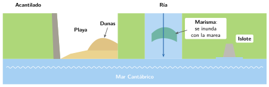
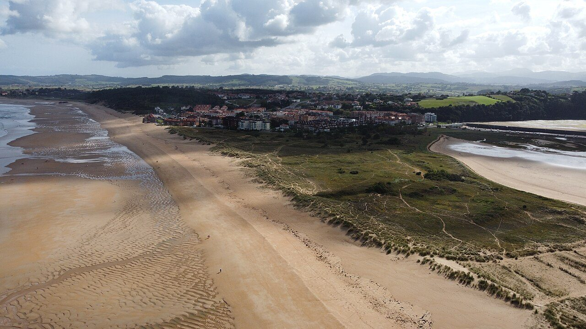
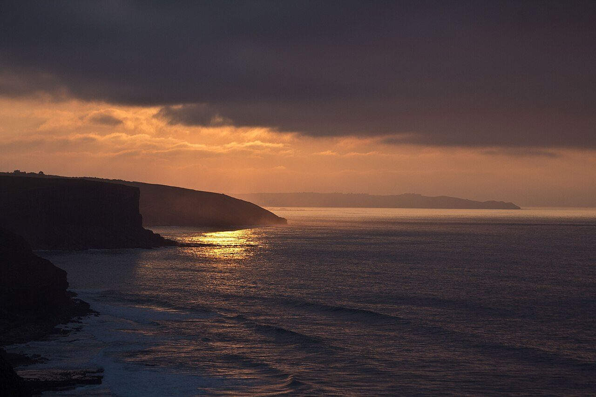
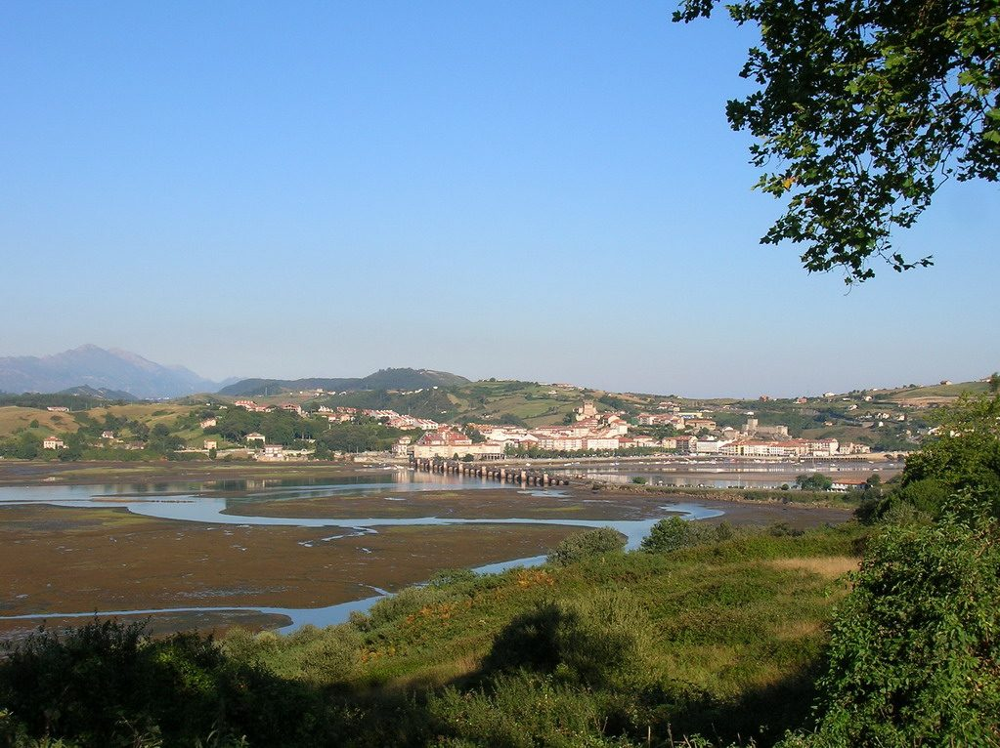

Playas, acantilados, rías y marismas
Criterios: PN 1.3, PN 6.1, PN 6.3
🤔 Pienso5 min
Qué hago aquí: Piensa un momento y contesta con lo que ya sabes. No pasa nada si no lo sabes: es para empezar.
Cuando baja la marea en una ría, ¿qué aparece? ¿Lo has visto alguna vez?
📖 Leo y aprendo15 min
Qué hago aquí: Lee despacio, mira los dibujos y los ejemplos, y quédate con la idea clave del final.


Foto: Luis Fermín TURIEL PEREDO · CC BY-SA 4.0 · Playa de Somo 01.jpg

Foto: Hotelpalacion · CC BY-SA 4.0 · Acantilados de Toñanes en la Costa occidental de Cantabria, entre Santillana del mar y Comillas.jpg

Foto: Juan José Hernández Rodríguez · CC BY 2.0 · Ría de San Vicente de la Barquera.jpg

Foto: Lourdes Cardenal · CC BY-SA 3.0 · Cantabria Santoña marismas 02 lou.JPG
✏️ Hago25 min
Qué hago aquí: Haz las actividades en orden. Empieza siempre por las básicas.
Define playa, duna, acantilado, ría y marisma y escribe un ejemplo de Cantabria de cada una.
Clasifica estas formas de la costa según las haya creado sobre todo la erosión o el depósito. Justifica dos de ellas.
Elige el grupo de cada uno.
Explica la diferencia entre una ría y la desembocadura de un río normal. ¿Qué pasa con el agua de la ría cuando sube la marea?
Mira el esquema de la costa y describe lo que verías caminando desde el acantilado hasta la marisma, en orden.
Explica tres servicios que nos dan las marismas (para la pesca, para las personas y para las aves). Después explica por qué en el pasado se rellenaban y qué ha cambiado.
Las dunas se protegen con pasarelas. Explica la cadena de causas: pisar la duna → …→ la playa pierde arena. Completa al menos tres pasos.
Compara las fotos de la ría y de la marisma: dos semejanzas y dos diferencias. ¿Qué paisaje verías en cada una seis horas después?
🚀 Amplío (si quieres saber más)
Qué hago aquí: ¿Has terminado? Lee la curiosidad o elige el reto. Es voluntario.
Busca la tabla de mareas de Santander de hoy. Anota las horas de pleamar y bajamar y la altura de cada una. Calcula la diferencia (carrera de marea) y el tiempo entre una pleamar y la siguiente. Explica por qué es peligroso pasear bajo un acantilado o mariscar sin consultarla.
✅ Compruebo5 min
Qué hago aquí: Contesta sin mirar la ficha y marca cómo lo llevas.